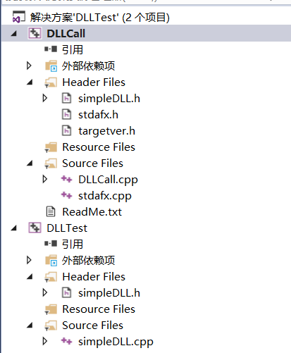
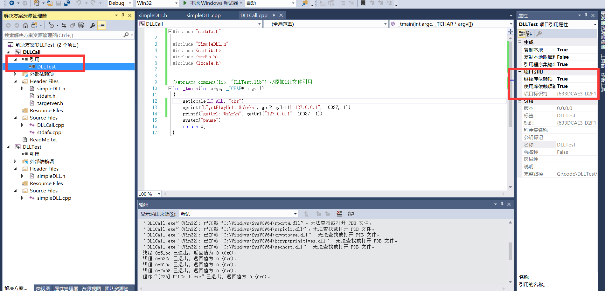

关于动态链接文件的背景知识，我们从函数的链接性开始说起。
链接程序ld需要将不同的模块下的函数链接在一起组建成一个可执行程序，因此需要查找到每个模块的函数，并进行链接。
C++不允许在一个函数中定义另一个函数，因此所有的函数存储持续性都是静态的，即在整个程序的执行期间都一直存在。默认情况下，函数的链接性是外部的（extern可以省略），我们也可以显示的加上static关键字，将函数的链接性改为内部的，使之只能在一个文件中使用。
链接程序为了在各个模块中查找函数，需要要求每个函数有不同的符号名。
在C语言中，一个函数名称对应一个函数，如C语言编译器可能将spiff翻译为_spiff函数，这种方法被称为C语言链接（C language linkage）。
但是在C++中，由于函数的重载，一个函数名可能对应多个函数，如C++编译器可能将spiff(int)转换成_spiff_i，将spiff(double, double)转换成_spif_d_d。这种方法称作C++语言链接（C++ language linkage）。
为了使C++语言可以兼容于C的函数链接，所以就有了extern “C”的用法。
1
2
3
extern "C" void spiff(int); //使用C语言链接
extern void spiff(int); //使用C++语言链接
extern "C++" void spiff(int); //使用C++语言链接
extern “c”在工程中常见的使用方式:
1
2
3
4
5
6
7
8
//这部分代码按C语言的方式进行编译
#ifdef __cplusplus
extern "C"{
/*...*/
#endif
#ifdef __cplusplus
}
#endif
扯的有点远了。。。
言归正传，演示下windows系统下vs中dll的生成和导入的常用写法。 新建两个工程，工程结构如下

分别为生成DLL的DLLTest工程和调用DLL的DLLCall工程。它们使用相同的simpleDLL.h文件。
在头文件simpleDLL.h中是DLL的API宏以及DLL的函数原型声明：
1
2
3
4
5
6
7
8
9
10
11
12
//simpleDLL.h
#pragma once;
// DLL_IMPLEMENT在SimpleDLL.cpp中定义
#ifdef DLL_IMPLEMENT
#define DLL_API __declspec(dllexport)
#else
#define DLL_API __declspec(dllimport)
#endif
DLL_API int add1(int x, int y);
DLL_API const wchar_t* getPlayUrl(const wchar_t* mgrIp, long mgrPort, long materialId);
DLL_API const char* getUrl(const char* mgrIp, long mgrPort, long materialId);
在simpleDLL.cpp中是具体的实现：
1
2
3
4
5
6
7
8
9
10
11
12
13
14
15
16
17
18
19
20
21
22
23
24
25
26
27
28
29
30
31
32
33
34
35
36
//simpleDLL.cpp
#define DLL_IMPLEMENT
#include "SimpleDLL.h"
#include <Windows.h>
#include <intrin.h>
#include <stdlib.h>
#include <string.h>
int DLL_API add1(int x, int y)
{
return x+y;
}
DLL_API const wchar_t* getPlayUrl(const wchar_t* mgrIp, long mgrPort, long materialId)
{
static wchar_t url[260] = { 0 };
wcscpy_s(url, L"http://中文");
wcscat_s(url, mgrIp);
wcscat_s(url, L":");
wchar_t szPort[20] = { 0 };
_ltow_s(mgrPort, szPort, 10);
wcscat_s(url, szPort);
return url;
}
DLL_API const char* getUrl(const char* mgrIp, long mgrPort, long materialId)
{
static char url[260] = { 0 };
strcpy_s(url, "http://中文");
strcat_s(url, mgrIp);
strcat_s(url, ":");
char szPort[20] = { 0 };
_ltoa_s(mgrPort, szPort, 10);
strcat_s(url, szPort);
return url;
}
调用dll有3种办法
1、配置VC++目录，分别配置dll的头文件目录，dll文件目录和dll文件名称 VC++目录–>包含目录 DLLTest\DLLTest VC++目录–>库目录 DLLTest\Debug 连接器–>输入–>附加依赖项 DLLTest.lib
2、配置项目依赖 在引用中添加项目依赖，并将使用库依赖项输入设置为True

3、 在项目路径中能搜索到DLLTest.lib的前提下（复制DLL到项目路径，或如方法1在库目录添加路径），在调用前添加代码 #pragma comment(lib, “DLLTest.lib”)
在DLLCall.cpp中是DLL的调用：
1
2
3
4
5
6
7
8
9
10
11
12
13
14
15
16
17
//DLLCall.cpp
#include "SimpleDLL.h"
//#pragma comment(lib, "DLLTest.lib") //添加lib文件引用
#include <stdlib.h>
#include <stdio.h>
#include <locale.h>
int _tmain(int argc, _TCHAR* argv[])
{
setlocale(LC_ALL, "chs");
wprintf(L"getPlayUrl: %s\r\n", getPlayUrl(L"127.0.0.1", 10087, 1));
printf("getUrl: %s\r\n", getUrl("127.0.0.1", 10087, 1));
system("pause");
return 0;
}
为了使DLL兼容于C语言，我们可以采用和上面类似的C语言链接方式。
1
2
3
4
extern "C"
{
DLL_API int FUNC();
}